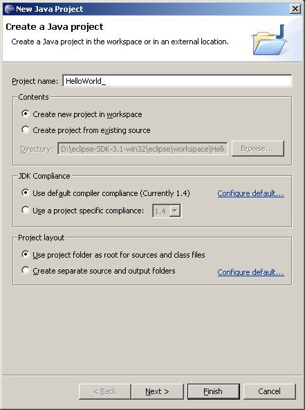
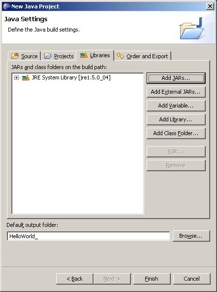
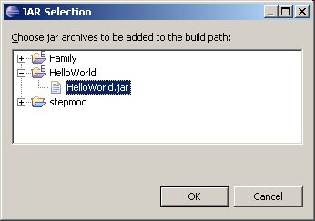
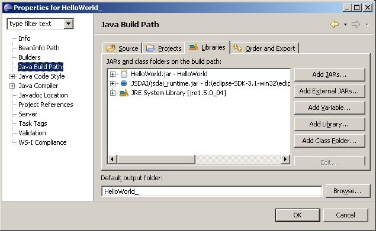

Create JSDAI Java Project
JSDAI Java project is a Java project with additional features created:
.repositories.tmp
folder;
jsdai.properties
file, containing a
repositories
directive to the folder
.repositories.tmp
(e.g. "repositories = .repositories.tmp");
contains automatically configured library
jsdai_runtime.jar
on the build claspath of the project.
You can launch the
New Java Project
wizard in the following ways:
If the
Express perspective
is switched on select
File -> New -> JSDAI Java Project
.
Select
File -> New -> Project -> JSDAI ->
JSDAI Java Project
.
Select
File -> New -> Other -> JSDAI ->
JSDAI Java Project
.
The
New Java Project
wizard dialog window appears (see
Figure 1
):
Enter project name in to the
Project name
field.
Select an applicable options in the below layouts. For more details refer the
Java Development User Guide
.
Click
Next
button to go to the next window.

Figure 1.
JSDAI Java Project wizard dialog window
The next dialog window appears to define Java build settings:
Select the
Libraries
tab to activate the panel (see
Figure 2
). You can add there a JAR file, created while compiling Express project.
Click
Add JARs
button. The
Jar Selection
dialog window appears (see
Figure 3
).
Select the jar file to be add to the build path from the presented tree and click
OK
button. The selected JAR appears in the
Libraries
panel.

Figure 2.
New Java Project wizard dialog window, Libraries panel

Figure 3.
JAR Selection dialog window
Click
Finish
button to complete JSDAI Java project creation.
You can add applicable
JAR
files after the JSDAI Java Project is created :
Right click on the JSDAI Java project folder and select the
Properties
menu item.
Select the
Java Build Path
node int the tree on the left to activate the panel (see
Figure 4
).
How to ad files is described above.

Figure 4.
Properties dialog window, Java Build Path panel with included
JAR
files
To top
Copyright © 2005-2008
LKSoftWare GmbH
. All Rights Reserved.
JSDAI is a registered trade mark of LKSoftWare GmbH.